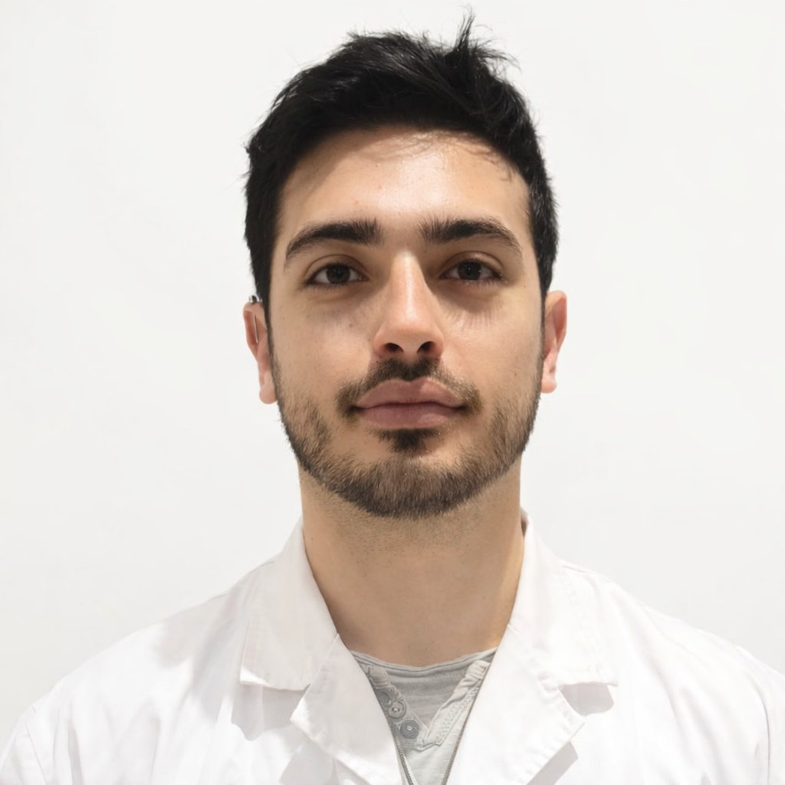
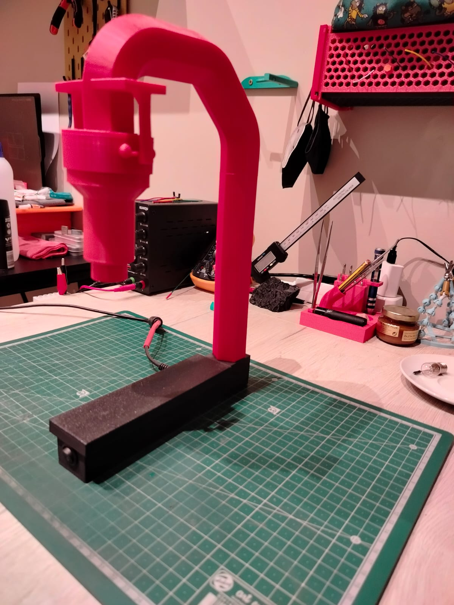
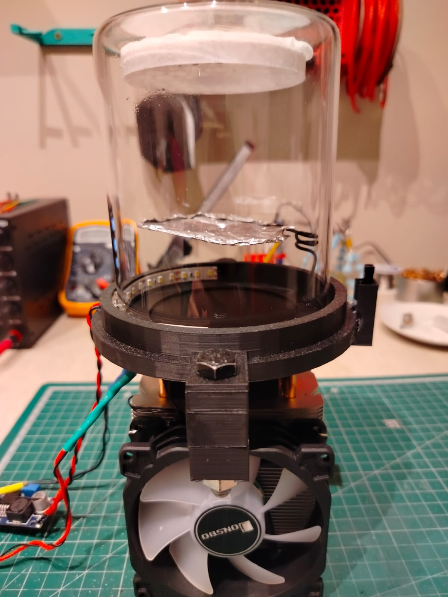
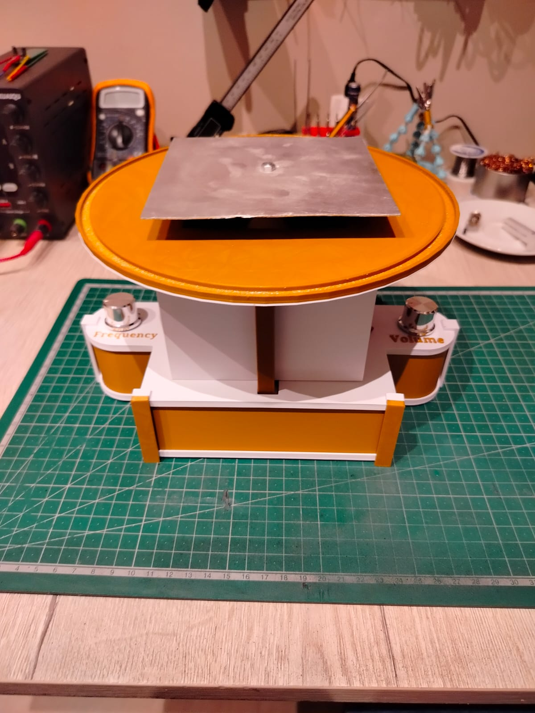
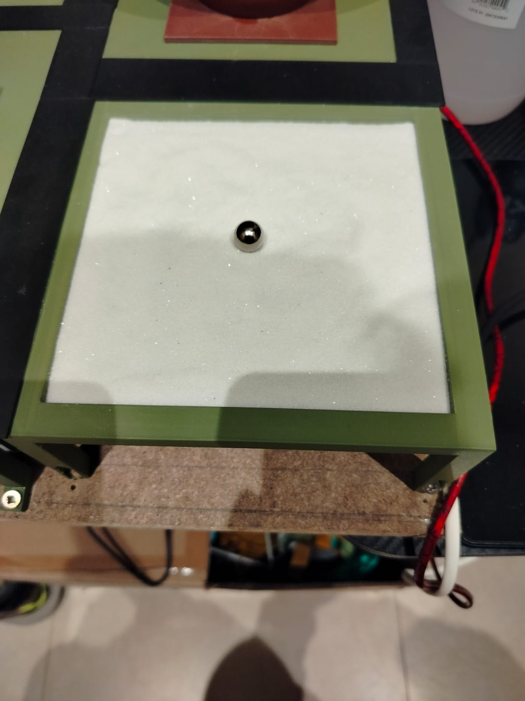
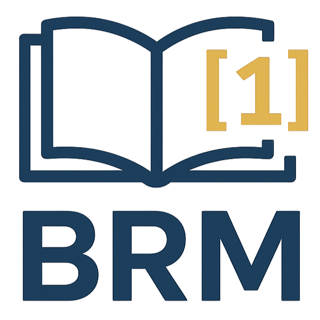
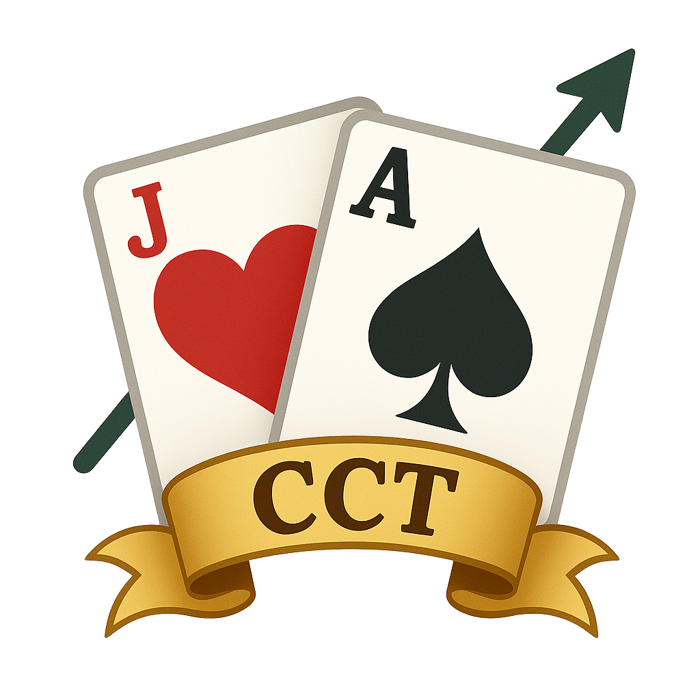

Working at the intersection of neuroscience, electrophysiology, and biological signal processing. I build things when the tools I need don't exist yet.

I'm a Catalan biologist currently completing a Master's in Translational Medicine. From an early age I have been drawn to science. My brother was born with a complex set of conditions, among them deafness, and the day someone explained to me how a cochlear implant works, something clicked. I was immediately fascinated by how science not only solves puzzles but can genuinely improve people's lives.
Beyond my academic background, I have always enjoyed building things. I started developing software to solve day-to-day problems or to learn something new, then wanted to take that into the physical world. Getting a 3D printer opened the door to electronics, mechanical design, and hands-on experimentation.
That curiosity is what brought me to brain-computer interfaces: a field where neuroscience, engineering, and AI converge, and where the impact on people's lives is tangible.
A biochip to record electrical signals from plants combined with a specialized AI model to interpret the data in real time. Goal: predict nutrient deficiencies before they're visible. Current main project.
read more →Electromagnetic levitation with closed-loop PID control. Designed, built, and 3D-printed from scratch — including the electromagnet.

read more →Continuous diffusion cloud chamber for visualizing ionizing radiation particle tracks. Custom electronics and thermal management.

read more →Motorized Chladni plate for visualizing standing wave patterns. Frequency-controlled driver with adjustable resonance.

read more →CNC-based sand plotter for geometric and algorithmic patterns. Full mechanical design, 3D-printed, custom firmware.

read more →
Bibliographic Reference Manager — built because the existing tools didn't work the way I needed.
read more →
Interactive trainer for learning card counting in blackjack. Built as a challenge to learn software development and game logic.
read more →